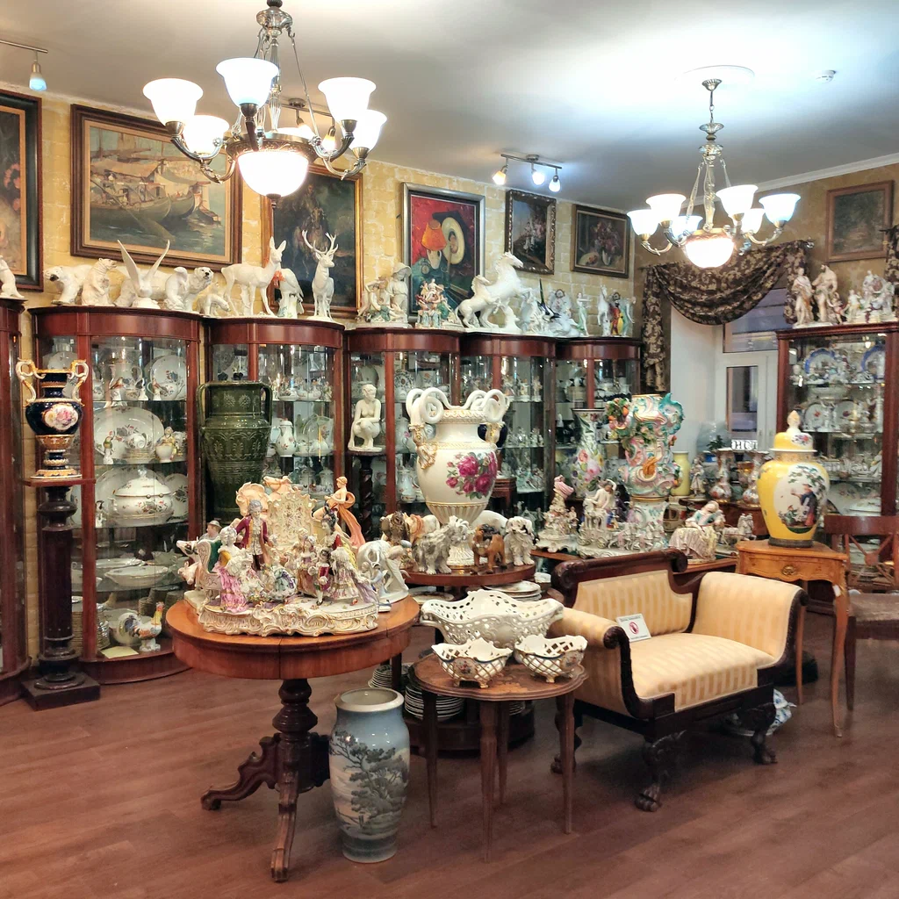
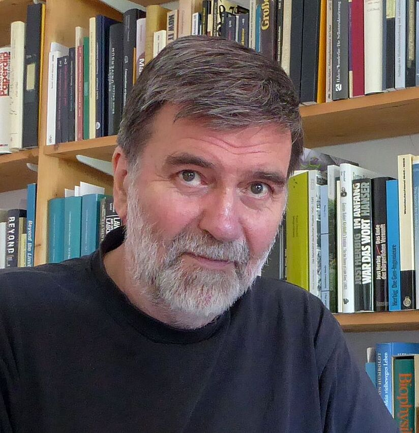
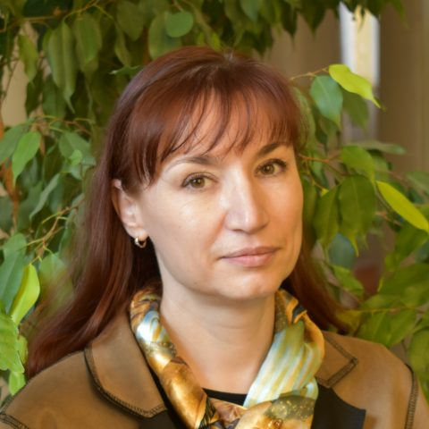
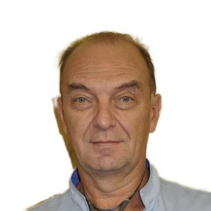

Кто мы?
Мы основаны в 2010 году коллекционерами для коллекционеров. Сокровищница — это не просто магазин, это сообщество ценителей истории и искусства. Каждый предмет в нашей коллекции проходит тщательную историческую экспертизу и аутентификацию.
Наша миссия
Сохранять культурное наследие и дарить вещам вторую жизнь. Мы верим, что каждый антикварный предмет хранит уникальную историю, и наша задача — найти для него достойного хранителя.
Что мы предлагаем?
- 🕰️ Старинные часы XIX-XX веков
- 🪑 Антикварная мебель ручной работы
- 🏺 Фарфор и керамика известных заводов
- 📚 Редкие книги и манускрипты
- 💎 Ювелирные украшения антик
- 🖼️ Живопись и графика

Наша команда
Анна Терёхина
Главный искусствовед
Эксперт по живописи XIX века, выпускница МГУ им. Ломоносова. Опыт работы более 15 лет.

Михаил Эккерт
Эксперт-реставратор
Специалист по фарфору и керамике, восстановил более 500 уникальных предметов.

Елена Авинова
Специалист по ювелирным украшениям
Сертифицированный геммолог, член Гильдии ювелиров России.
Ольга Козловская
Эксперт по редким книгам
Библиограф, кандидат исторических наук. Специализируется на прижизненных изданиях XVIII-XIX веков.

Виталий Петрушин
Мастер-часовщик
Потомственный часовщик, реставрирует механизмы XIX века с ручной доработкой деталей.
София Бруновская
Археолог-антиковед
Специалист по античным древностям, участник международных раскопок в Италии и Греции.
Нам доверяют
Успешных сделок
Лет на рынке
Довольных клиентов
Сертифицированных экспертов